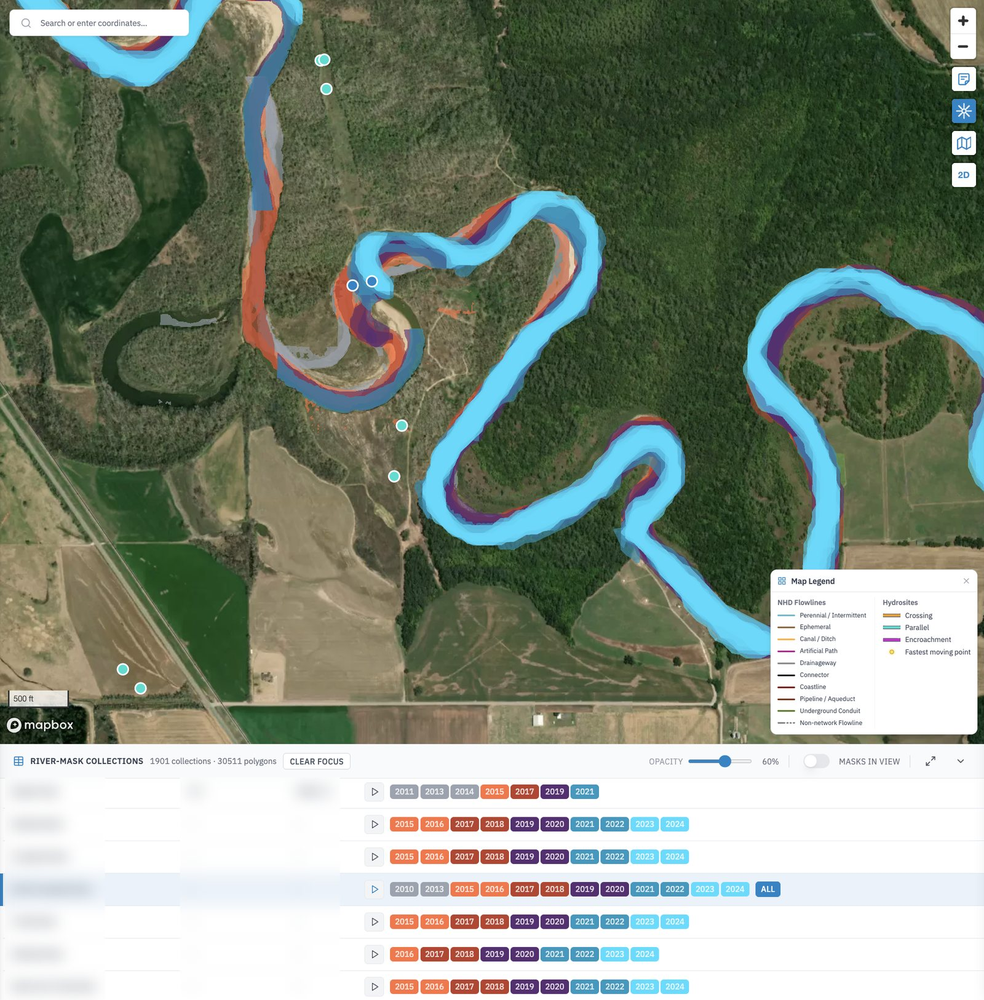
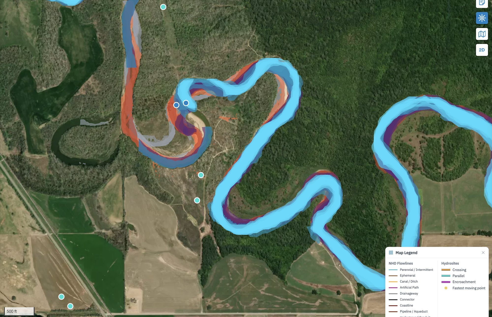

Industry work · pipeline integrity · satellite imagery
Channel Migration
Rivers move. This app traces each one from satellite imagery, year after year, and lays the traces over the pipelines.
- Company
- Earthbound AI, which models natural hazards for pipeline operators
- Role
- GIS engineer, primary developer
- Years
- 2026
- Stack
- React · Tailwind · Mapbox GL · FastAPI · DuckDB · GeoParquet on S3

One bend, every traced year at once. River, route and place names are blurred.
The brief
See the bank coming before it reaches the pipe
A pipe laid under a river was laid for the river as it was then. Meanders creep sideways, banks cut back, and a crossing designed for one channel can end up under another. The change is slow enough to miss from one year to the next, and plain on the map once the years are stacked.
The app was the newest of the three I worked on at Earthbound, and I was its primary developer, on the web app and on the FastAPI service behind it.
01 · River masks
One outline a year, stacked
Each river near the network has a collection of masks: the channel's outline traced from that year's imagery. The table at the bottom lists the collections, close to two thousand of them. Pick one and the map flies to it. Press play and the years run in order, or switch single years on and off to compare two. Where the colours fan out, the river has moved. In the bend above, the older outlines sit well round from where the channel runs now.
- Colours by age, grouped two years at a time so the stack stays readable
- Masks in view narrows the table to what the map is showing

The bend up close. The orange and red outlines of the earlier years sit apart from the light blue of the latest ones: that gap is the river moving.
Where river meets pipe
Crossing, parallel or encroachment
Every place a river and a pipe meet is a site, sorted into three types: the river crosses the pipe, runs beside it, or is closing in on it. Each one carries its distance and the angle at which the river meets the pipe. Filter by business unit or route and the side panel counts the sites of each type in view, so an engineer can work down a list instead of scanning the map.
- River-mask timelineweb app
- Collections tableweb app
- Site types and filtersweb app and API
- Masks, flowlines and sitesFastAPI and DuckDB